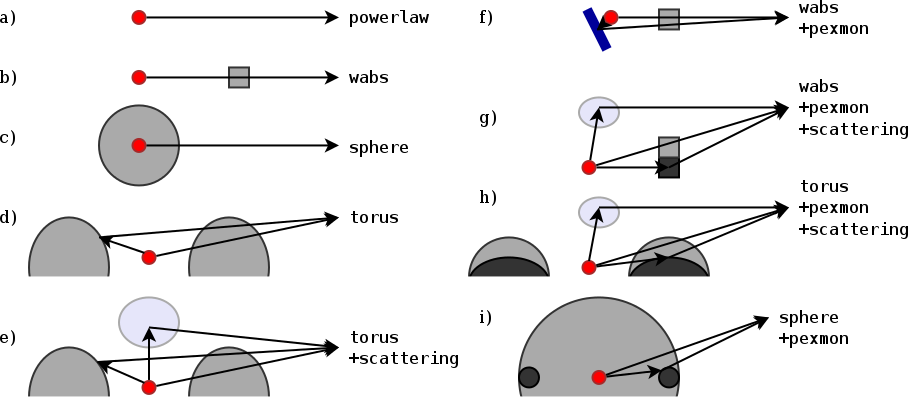
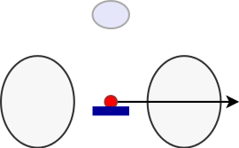
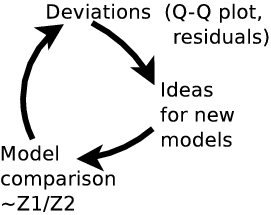
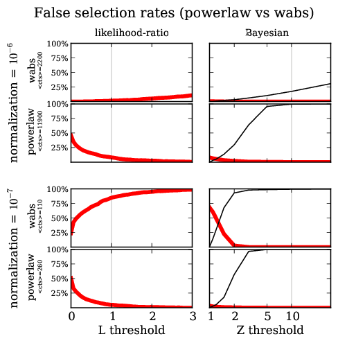

Bayesian model selection for X-ray spectra
http://arxiv.org/abs/1402.0004
Overview
- X-ray data collection
- Likelihood (C-stat)
- Fitting with Xspec
- Analysis with BXA (PyXspec or Sherpa)
- What does it all mean?
- Summary
- Discovering models, false positive rates
X-ray data collection

Likelihood for Data collection process
Poisson likelihood($\theta$ $\rightarrow$ model $\rightarrow$ telescope; data)
$$\cal{L}(\theta|M)$$
Tells how likely it is to generate the observed data, assuming parameters $\theta$ and
model $M$ are the real ones.
Many outcomes possible
Fitting in PyXspec
import bxa.xspec as bxa
from xspec import *
Fit.statMethod = 'cstat'
Plot.xAxis = 'keV'
s = Spectrum('example-file.fak')
s.notice("0.2-8.0")
m = Model("pow")
# set parameters range : val, delta, min, bottom, top, max
m.powerlaw.norm.values = ",,1e-10,1e-10,1e1,1e1" # 10^-10 .. 10
m.powerlaw.PhoIndex.values = ",,1,1,5,5" # 1 .. 3
m.fit()
- Fitting find where $\theta$ makes $\cal{L}$ maximal
- Contour
- Fisher information
- MCMC
Analysis in PyXspec or Sherpa
import bxa.xspec as bxa
from xspec import *
Fit.statMethod = 'cstat'
Plot.xAxis = 'keV'
s = Spectrum('example-file.fak')
s.ignore("**"); s.notice("0.2-8.0")
m = Model("pow")
# set parameters range : val, delta, min, bottom, top, max
m.powerlaw.norm.values = ",,1e-10,1e-10,1e1,1e1" # 10^-10 .. 10
m.powerlaw.PhoIndex.values = ",,1,1,5,5" # 1 .. 3
transformations = [
bxa.create_uniform_prior_for( m, m.powerlaw.PhoIndex),
bxa.create_jeffreys_prior_for(m, m.powerlaw.norm) ]
bxa.standard_analysis(transformations,
outputfiles_basename = 'simplest-',)
Explanation needed

 Parameter chains
Parameter chains
| $N_H$ | $\Gamma$ |
|---|---|
| 22.4 | 1.9 |
| 22.45 | 1.8 |
| 22.38 | 1.8 |
| ... | ... |
Model comparison
produces $Z$ value: "evidence for the current model"
Bayes factor $$B = \frac{Z_1}{Z_2}$$
Odds ratio $$O = \frac{P_1}{P_2} \frac{Z_1}{Z_2} = 100$$
model 1 is 100x more probably than model 2, given this data
$O \sim 1$: can not distinguish!
Pragmatic view
- Why fitting is poor
- multiple peaks
- uncertainty estimates in multiple dimensions are dodgy
- Bayesian inference with MCMC
- Bayesian inference with nested sampling
- Global algorithm
- samples from parameter space
- explores multiple peaks
- computes integral, quite fast
Application: obscurer of AGN
CDFS: ~300 AGN detected
Model definition: Torus
represents physical scenario: $\Gamma$, $N_H$, normalisation

Parameters
| Normalisation ~ L | log-uniform |
| $\Gamma$ | informed prior $1.95\pm0.15$ |
| column density $N_H$ | log-uniform |
| z | informed prior: photo-z pdf |
Spectra: 179


Proposal
| Already best practise | Proposed | |
|---|---|---|
|
|
|
$\rightarrow$ see paper
Change
$\frac{d\text{method}}{dt} \sim 0$- be pragmatic
- How good is the method?
- Do you understand why it works (for what kind of problems)?
- When does it fail?
- How does failure look like? Can you detect it?
- Systematic errors?
Statistics background
$$ p(H|M,D) = \frac{p(H|M) p(D,M)}{Z} $$ $$ Z = \int{p(H|M) p(D,M)} = p(D|M) $$ $$ Z = \int{p(\theta|M) \cal{L}(\theta)} d\theta $$ $$ O = \frac{p(M_A|D)}{p(M_B|D)} = \frac{p(M_A) p(D|M_A)}{p(M_B) p(D|M_B)} $$ "Average likelihood over parameter space"Model discovery

Model discovery

False detection probability
